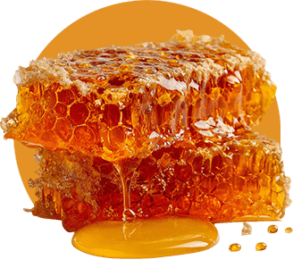
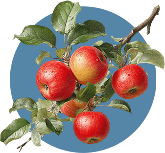

Where land and season shape everything that follows.
At Foragers, mead does not begin in a tank or a barrel. It begins in blossom, in soil, in weather, and in time.
The Landscape
Rooted in the rhythm of the coast
Our estate rises gently from the Salish Sea, surrounded by evergreen forest and coastal light. The orchard was planted with intention: heritage apple varieties chosen for flavour, resilience, and character.
We work within the rhythm of the seasons, not against it.
Spring blossoms bring delicate floral notes to our honey. Summer deepens fruit and nectar. Autumn delivers crisp acidity and subtle spice.
No two years are identical. We believe that's something to honour, not correct.
The Hive
Honey as foundation, not merely ingredient
Across the property, our hives gather nectar from apple blossom, blackberry bloom, and mountain wildflower. The result is Millefiori honey — raw, unpasteurized, and expressive of the moment in which it was gathered.
Honey is not simply an ingredient here. It is the foundation. Its floral nuance, weight, and complexity guide our fermentations. It informs our kitchen. It shapes our sense of season.
With every harvest, we listen first — and craft second.

From Field to Glass to Table
An integrated estate — from soil to plate
Foragers was created as an integrated agricultural and hospitality estate. Our meads reflect the honey and fruit grown here. Our kitchen works closely with our head meadmaker, incorporating estate honey and mead directly into sauces, reductions, vinaigrettes, and desserts.
What you taste in your glass may echo on your plate. What you find on your plate may carry the brightness of orchard fruit or the warmth of wildflower bloom.
It is not about novelty.
It is about cohesion.

Expression Over Replication
Something living — shaped by weather, bloom, and time
In a world that values uniformity, we choose expression.
Small-batch fermentations allow honey, fruit, and time to speak without excess manipulation. Seasonal menus shift according to what is freshest and most compelling.
The result is not something manufactured to remain identical year after year, but something living — shaped by weather, bloom, harvest, and the quiet patience of fermentation.
When you visit Foragers, you are tasting this moment.
A Place to Gather
Connection above the orchard, surrounded by forest
Where It Begins is not only about land. It is about connection.
We built Foragers to be a space where friends gather over shared plates, where conversation moves slowly, and where presence is valued over distraction.
Above the orchard, with forest at our back and sea air close by, we invite you to experience something rooted, intentional, and distinctly of this place.
Everything begins here.
Come experience it for yourself
Join us above the orchard for seasonal mead, small plates, and an experience shaped entirely by this place.